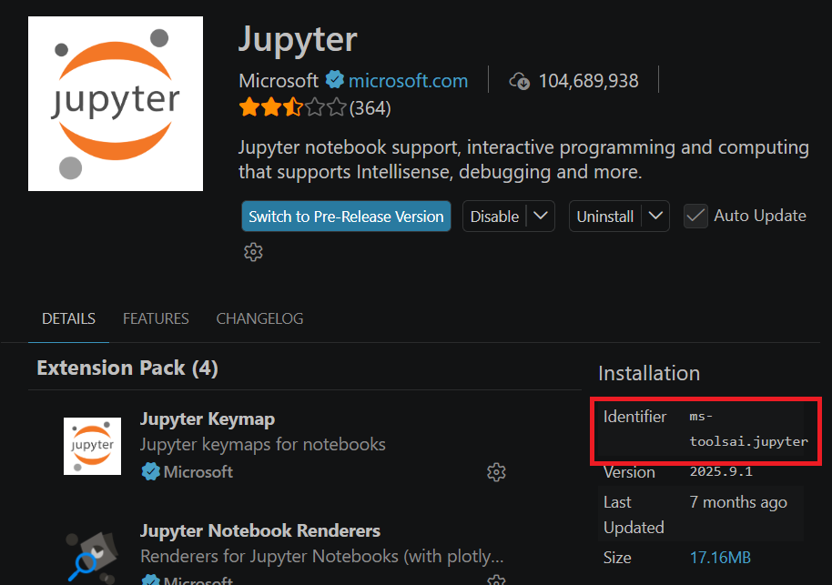
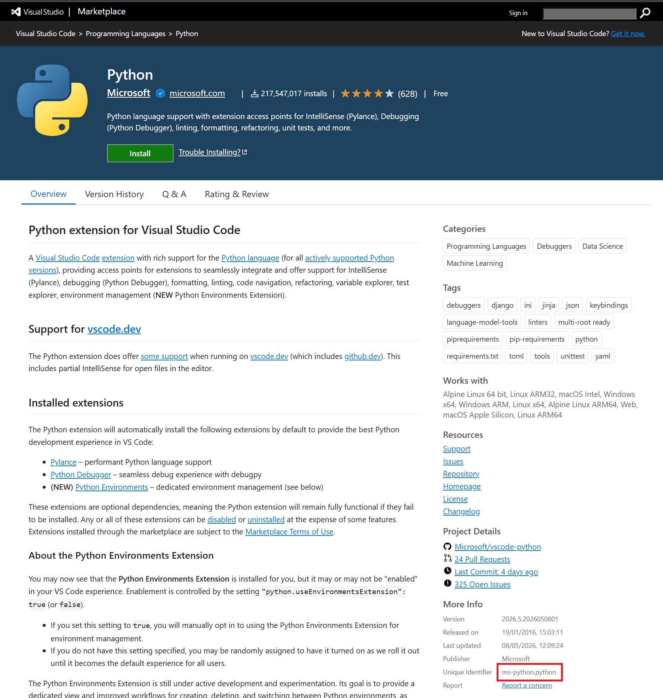

Every extension in VS Code has a unique identifier that is used to distinguish it from other extensions. This identifier is of the format <publisher>.<name>, where <publisher> is the name of the publisher and <name> is the name of the extension. Identifiers are useful for managing and referencing extensions within the VS Code environment.
To find the identifier of an extension within the Extensions view, open the Extensions view and open the page for the extension. The identifier will be displayed on the right hand side, near the top. The image below shows an example, with the identifier highlighted with a red box.

Within the page for an extension in the Marketplace website, the identifier will be displayed on the right hand side in the "More Info" section, such as in the image below, where the identifier is highlighted with a red box.

It will also form part of the URL for the extension's page, such as https://marketplace.visualstudio.com/items?itemName=ms-python.python
wherems-python.python is the identifier for the Python extension.